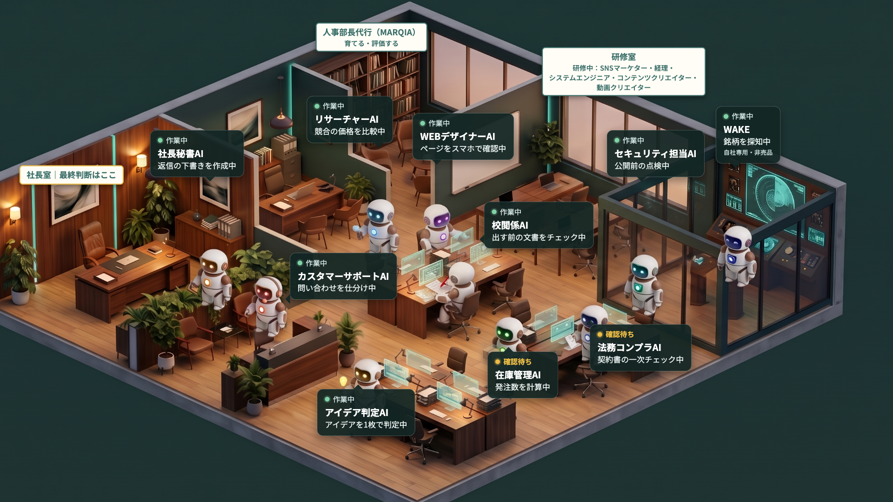

学ぶ
- ChatGPT / Claude 活用の教育・
研修 「触ったことはあるけど、仕事に使えていない」社長・社員の方へ。
御社の実際の業務を題材に、明日から使える活かし方をお伝えします。 - AI開発ツール活用の教育・
研修（Claude Code / Codex） 社内の面倒な仕事を1つ選び、AI社員として一緒に作ります。
作った後も、自分たちで直せる形で引き渡します。

経営と現場の両方を知る目線で「本当に使われる」AIを設計し、少ない人数で生産性を上げる会社をつくります。
AIは作業を、判断は人が持つ。
無料相談する「触ったことはあるけど、仕事に使えていない」社長・社員の方へ。
御社の実際の業務を題材に、明日から使える活かし方をお伝えします。
社内の面倒な仕事を1つ選び、AI社員として一緒に作ります。
作った後も、自分たちで直せる形で引き渡します。
AI社員を採用して、育てる
秘書AI・リサーチャーAIなど、すでに動いている型から導入。
御社の業務に合わせて調整します。
ベテランの頭の中にある判断基準を聞き取り、AI社員に移します。
人が辞めても、ノウハウが会社に残ります。
② 育てる（月額顧問）
最終的な判断は、いつも社長。MARQIAは、その判断を支える外部の人事部長です。
判断するのは人です。AI社員は、御社の仕事を覚えるほど、任せられる範囲が広がっていきます。

※ここでの「社長」は、AI社員を導入される御社の社長（お客様）のことです。
| 役職 | AI社員の働き方 | 社長がやること |
|---|---|---|
| 新人 | 社長が指示 → AIが作業 → 社長が確認 | 毎回指示して確認する |
| 主任 | 手順を覚え、AIが下書きする | 「OK」を出すだけ |
| 課長 | 決まった時間に自分で動き、結果を報告する | 報告を読むだけ |
| 部長 | 複数のAI社員が、仕事を受け渡しながら回す | 月に1回、方針を出すだけ |
昇進させるのは、MARQIA（人事部長）の仕事。AIが勝手に変わるのではなく、手順・つなぎ先・任せる範囲・動くタイミング・報告のしかたを、1段ずつ整えていきます。
送信・支払い・契約などの最終判断は、どの役職でも社長が行います。
入社済み
主任
担当：社長のメール対応
入社済み
新人
担当：競合調査
入社済み
新人
担当：お客様からの問い合わせ対応
入社済み
新人
担当：告知・採用・キャンペーンのページ制作
このページもWEBデザイナーAIが制作しました
入社済み
新人
担当：事業アイデアを1枚で判定（GO／小さく試す／保留／やめる）
入社済み
新人
担当：在庫のチェックと発注の準備
入社済み
新人
担当：公開前・導入前の点検
入社済み
新人
担当：契約書の一次チェック
研修中
SNSマーケティング担当
研修中
経理担当
研修中
システム開発担当
研修中
コンテンツ制作担当
住まいへの「想い」を大切にする、つくば市のリノベーション・リフォーム・新築の住宅会社。
稼働中
創業50年以上の窓・玄関ドアリフォーム専門店。
納品済み
料金は、実際にかかる作業時間がベースです。表示価格はすべて税抜です。
研修・セミナー｜自分でAIを使える・作れるようになる
（本番の時間 ＋ 準備の時間）× 10,000円／時間
| 種類 | 説明 | 2時間の場合 |
|---|---|---|
| テンプレ | 既存の資料をそのまま使います。 | 20,000円 |
| セミカスタム | 業種に合わせて、事例や画面を差し替えます。 | 40,000円 |
| フルカスタム | 事前にヒアリングして、御社専用の資料を作ります。 | 60,000〜80,000円 |
※参加者が10名を超える場合は、1名あたり5,000円を加算します。
※法人研修・団体向けセミナーは、内容に合わせてお見積もりします。
AI社員を採用して、育てる
料金は無料相談でご案内します。
開業記念価格（2026年11月30日まで・
MARQIAの開業を記念して、第1期にご導入いただく5社に限り、この価格でお引き受けします。
第1期の会社さまは、ご契約が続くかぎり、月額の単価（基本料・AI社員1体あたり・ご利用者1人あたり）をこの価格のまま据え置きます。
会社ごと 25,000円＋AI社員1体 30,000円＋使う人1人 10,000円
環境の確認、AI社員の設定とテスト、PCの設定と使い方のご説明まで。
基本料 30,000円＋AI社員1体 15,000円＋使う人1人 5,000円
育てる・任せる範囲を決める・評価する・入れ替える。定例面談は原則オンラインです。
御社の場合で計算してみる
① 採用する（導入費・初回のみ）
65,000円
② 育てる（月額顧問）
50,000円／月
AI社員はあとから追加・入れ替えができます。追加するときは導入費が1体30,000円かかり、月額が15,000円増えます。
共通のご案内
ビジネス交流会の出欠をQRで自動記録
Google Apps Script来訪者の情報をDiscordに自動で共有
Google Apps Script
伊原 敏明（いはら としあき）MARQIA 代表
ベンチャーキャピタル、エンタメ事業会社での新規事業開発、AIスタートアップ、SaaS系上場企業の経営企画室を経験。
現在は出張専門の中古車買取店を経営。
自分の店で使う秘書AIを自作したのが、MARQIA（マルキア）の始まり。
米国株のトレードAI「WAKE」も自社で運用中。早稲田大学大学院理工学研究科修了（専門：生化学）。茨城県在住。
業務のどこにAI社員を置けるか、一緒に整理します。